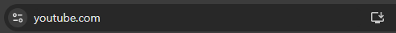

PWA(Progressive Web App) 설치 버튼 활성화하기¶
크롬 주소창 오른쪽에 나타나는 "앱에서 열기" 또는 "설치" 아이콘은 해당 사이트가 PWA(Progressive Web App) 조건을 충족했을 때 브라우저가 자동으로 표시해 주는 기능입니다.

1. PWA 설치 버튼이 활성화되기 위한 필수 조건¶
브라우저(Chrome, Edge 등)가 "앱으로 열기" 버튼을 띄우기 위해서는 아래 세 가지 요소가 반드시 필요합니다.
① 웹 앱 매니페스트 (Web App Manifest)¶
앱의 이름, 아이콘, 시작 URL, 표시 방식(standalone 등)을 정의하는 JSON 파일입니다.
- 파일 예시 (
manifest.json):
{
"short_name": "MyTask",
"name": "My Task Management App",
"icons": [
{
"src": "icon-192.png",
"sizes": "192x192",
"type": "image/png"
},
{
"src": "icon-512.png",
"sizes": "512x512",
"type": "image/png"
}
],
"start_url": "/",
"display": "standalone",
"theme_color": "#000000",
"background_color": "#ffffff"
}
② 서비스 워커 (Service Worker)¶
브라우저 백그라운드에서 실행되는 스크립트 파일입니다. 오프라인 지원이나 푸시 알림 등을 처리하며, 최소한 fetch 이벤트 리스너가 등록되어 있어야 설치 가능으로 간주됩니다.
③ HTTPS 보안 연결¶
보안을 위해 PWA는 반드시 HTTPS 환경에서만 작동합니다. (localhost는 예외적으로 허용됩니다.)
2. 작동 원리¶
- 감지: 사용자가 사이트에 방문하면 브라우저는 HTML 헤더에 연결된
manifest.json과 등록된 서비스 워커를 확인합니다. - 판단: 설치 기준(아이콘 유무, 서비스 워커 작동 여부 등)을 모두 충족하면 브라우저가 주소창에 설치 아이콘을 생성합니다.
- 실행: 사용자가 이 버튼을 눌러 앱을 설치하면, 데스크톱에 바로가기가 생기고 브라우저의 주소창이나 탭이 없는 독립적인 창(Standalone) 형태로 사이트가 실행됩니다.
3. 직접 구현할 때의 장점¶
일반 사이트에 이 기능을 적용하면 다음과 같은 효과를 얻을 수 있습니다.
- 재방문율 상승: 바탕화면이나 작업 표시줄에 아이콘이 고정되어 사용자가 쉽게 다시 접속할 수 있습니다.
- 네이티브 앱 경험: 브라우저 UI 없이 앱처럼 보여 몰입감을 줍니다.
- 오프라인 모드: 서비스 워커를 통해 네트워크가 연결되지 않은 상태에서도 특정 페이지를 보여줄 수 있습니다.
4. 코드 작성¶
sw.js(서비스 워커) 파일은 브라우저에서 제공하는 기본 파일이 아니기 때문에 직접 작성하거나 라이브러리를 통해 생성해야 합니다.
단순히 주소창에 "앱에서 열기" 버튼을 띄우는 것이 목적이라면, 복잡한 로직 없이 매우 간단한 코드만으로도 충분합니다.
① 최소 기능 sw.js 작성하기¶
브라우저가 PWA로 인식하기 위한 최소 조건은 "서비스 워커가 등록되어 있고, fetch 이벤트 리스너가 존재한다"는 점입니다. 아래 코드를 복사해서 {root}/sw.js 파일을 만드세요.
// {root}/sw.js
// 서비스 워커 설치 시 실행 (캐싱 등 준비 작업)
self.addEventListener('install', (event) => {
console.log('Service Worker: Installed');
self.skipWaiting(); // 업데이트가 있으면 즉시 활성화
});
// 서비스 워커 활성화 시 실행
self.addEventListener('activate', (event) => {
console.log('Service Worker: Activated');
});
// "앱에서 열기" 버튼이 나타나게 하기 위한 필수 이벤트
self.addEventListener('fetch', (event) => {
// 현재는 별도의 캐싱 로직 없이 통과만 시킴
// 나중에 오프라인 지원을 구현하고 싶다면 여기에 로직을 추가합니다.
});
주의사항: 서비스 워커(Service Worker)의 위치
PWA의 핵심인 서비스 워커(sw.js) 파일 역시 {root} 디렉토리의 최상위에 두는 것을 권장합니다.
- 이유: 서비스 워커는 자신이 위치한 디렉토리를 기준으로 제어 권한(Scope)을 가집니다.
- 만약
{root}/js/sw.js에 두면/js/하위 경로의 요청만 제어할 수 있게 됩니다. - 사이트 전체에서 "앱에서 열기" 기능을 안정적으로 작동시키려면 반드시 루트 경로(
{root}/sw.js)에 배치하세요.
② HTML에서 서비스 워커 등록하기¶
파일을 만드는 것만으로는 작동하지 않습니다. index.html에서 브라우저에게 manifest.json 파일과 sw.js 파일을 서비스 워커로 사용하겠다고 알려줘야 합니다.
HTML 코드¶
index.html의 <head> 부분에 아래 코드를 추가해 주세요.
JavaScript 코드¶
index.html의 </body> 태그 직전에 아래 스크립트를 추가하세요.
<script>
if ('serviceWorker' in navigator) {
window.addEventListener('load', () => {
navigator.serviceWorker.register('/sw.js')
.then((reg) => console.log('Service Worker Registered!', reg))
.catch((err) => console.error('Service Worker Registration Failed', err));
});
}
</script>
③ 요약: {root} 디렉토리 체크리스트¶
이제 당신의 {root} 폴더에는 최소한 다음 파일들이 있어야 합니다.
manifest.json: 앱의 이름과 아이콘 정보 설정.sw.js: 위에서 만든 서비스 워커 파일.index.html: 매니페스트 연결(<link>) 및 서비스 워커 등록 스크립트 포함.- 아이콘 파일들:
manifest.json에서 지정한 경로에 실제 이미지 파일(192px, 512px 등) 존재.
④ 더 전문적인 도구가 필요하다면? (Workbox)¶
만약 나중에 사이트 규모가 커져서 "오프라인에서도 접속 가능하게 만들기"나 "이미지 캐싱" 같은 복잡한 기능을 넣고 싶다면, 구글에서 만든 Workbox라는 라이브러리를 사용하는 것이 좋습니다. 직접 sw.js를 한 줄 한 줄 짜는 노가다를 획기적으로 줄여줍니다.
⑤ 확인 방법¶
- Chrome 브라우저로 접속합니다.
- F12 (개발자 도구) → Application 탭 → Service Workers 메뉴에서 상태가
Activated and is running인지 확인합니다.
- 잠시 기다리면 주소창 오른쪽에 모니터 모양의 설치 아이콘이 나타납니다.